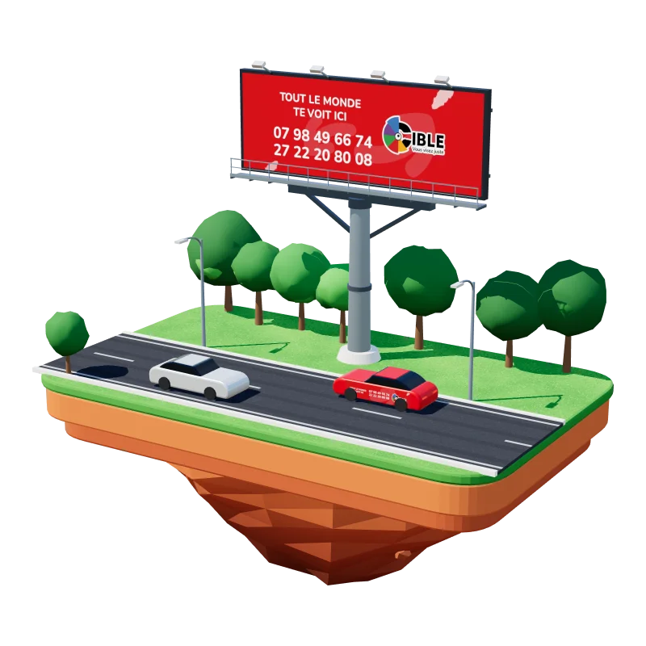

Être vu
Positionner votre marque sur des emplacements, des supports et des canaux adaptés à vos audiences.
Nos services
Affichage, communication mobile, digital, street marketing, création de contenus et Media Intelligence : nous connectons les annonceurs à leurs audiences, dans la rue comme en ligne. Un seul interlocuteur suit votre campagne de bout en bout.

 01 Régie02 Mobile03 Brand experience04 Media Intelligence
01 Régie02 Mobile03 Brand experience04 Media Intelligence
Quatre expertises
Notre approche
Positionner votre marque sur des emplacements, des supports et des canaux adaptés à vos audiences.
Transformer une prise de parole en interaction grâce au street marketing, aux activations et aux expériences digitales.
Suivre le déploiement de la campagne, documenter son exécution et en tirer les enseignements pour les prochaines actions.
Parlons-en
Décrivez-nous votre objectif en quelques lignes. On vous répond avec une recommandation, pas avec un catalogue.